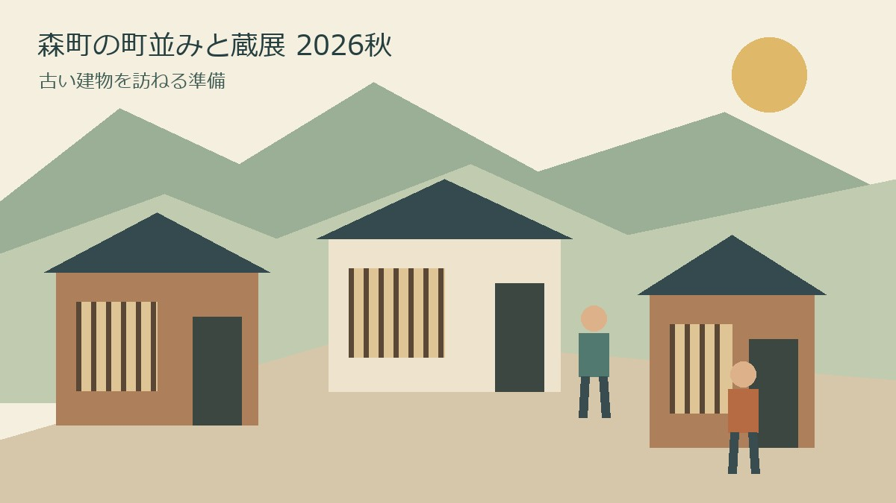
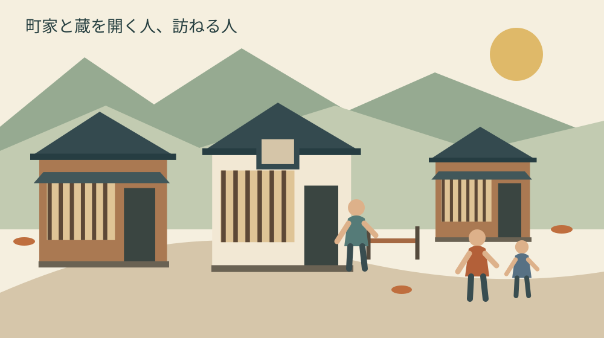
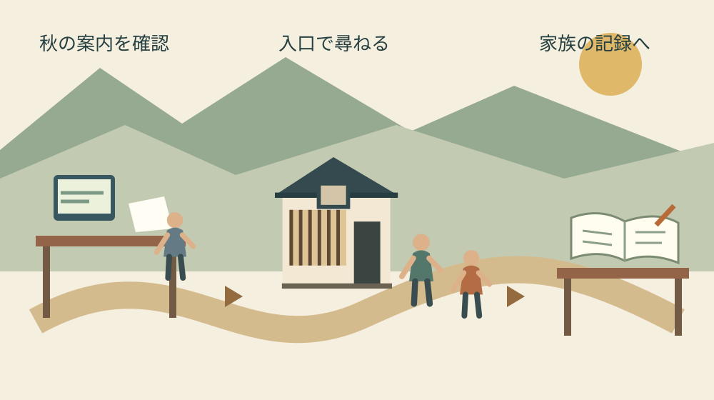

森町の町並みと蔵展2026秋｜古い建物を訪ねる準備
公開｜水曜日・歴史建築

Q. 森町の町並みと蔵展、2026年の秋はいつ？ 古い建物を見る前に何を調べる？
A. 森町の第41回町並みと蔵展は、2026年11月28・29日に森町中心部で開催予定です。10月28日時点で主催者ページには春の第40回の詳細も残っています。春の会場・駐車場・講演時刻を秋に流用せず、秋の最新案内と当日の公開範囲を確認して訪ねてください。
町家と蔵を開ける人の時間から考える
町並みと蔵展を迎える町には、建物を維持し、人を迎える準備を重ねる方がいます。戸を開ける前の掃除や片付け、来場者の案内、閉場後の戸締まり。見学者が歩く時間の前後にも仕事がある。その手間に敬意を払うところから、秋の訪問を考えたいと思います。
私は大石浩之（磐田市／不動産業）です。森町の外に住み、地域と不動産実務をつなぐ立場で書いています。この記事では水曜日の建築・歴史という切り口から、町家や蔵を見る準備を扱います。出店をすべて巡る案内ではなく、古い建物との付き合い方が主題です。
私は、歴史ある建物を楽しむ準備とは、行き先を増やすことより、相手に頼らず確認できることを先に済ませることだと考えます。公開時間と入口を調べる。それだけでも、迎える側が同じ説明を繰り返す負担を減らせます。まず自分の予定表に、確認する日を一つ入れるのが今日の一歩です。
2026年秋の予定と、春の終了済み案内を分ける
第41回町並みと蔵展オータムフェアについて、静岡県文化財ポータル「レガシズ」は2026年11月28日から29日、森町中心部と掲載しています。秋葉街道沿いの町家や蔵のある町並みを舞台に、歴史講演会や茶・和菓子・骨董品などの出店を紹介しています。確認日は2026年10月28日です。
主催者の遠州木三の里連も、公式サイトで令和8年秋は11月28・29日を予定していると案内しています。「予定」という表現を残して読みます。日付が掲載されていることと、個々の建物の公開時間や当日の催しがすべて確定していることは別だからです。
意外に見落としやすいのは、同じ主催者ページに第40回の詳しい案内も載っていることです。「塩の道と藤江金兵衛」、4月4日の講演、城下地区、駐車場の図は春の案内です。画面の下に詳しい情報があるからといって、秋の第41回の条件として読み替えることはできません。
春に取り上げられた人物に関心がある方は、藤江金兵衛と森町城下の商いを扱った記事を予習に使えます。ただし、人物の歴史を知ることと、秋にその関連建物へ入れることは別です。人物記事を根拠に見学先を確定しないでください。
10月28日時点で、本記事が参照した本文からは秋の詳細な会場図、各建物の公開範囲、講演時刻、一般来場者の駐車場を確認できていません。未確認欄を春の情報で埋めないことが、訪問準備の出発点です。出発前には主催者の最新案内で、回数と開催日が秋に合っているかを確かめてください。
観光ウォークの条件は、蔵展の一般見学と別
森町公式「第21回森町観光ウォークについて」は、2026年11月29日のコースが第41回町並みと蔵展の会場を通ると案内しています。蔵展と同日に歩く企画ですが、観光ウォークの参加条件が、そのまま蔵展一般の入場条件になるわけではありません。
ウォークの参加費、申込期限、集合場所、受付時間、駐車場はウォークに参加する人のための情報です。蔵展を個人で見に行く場合まで、同じ申込みや同じ駐車場所が使えるとは判断しません。参加する催しの名前を予定表の先頭に書くと、別企画の条件が混ざりにくくなります。
家族で予定を共有する際も、「11月29日に森町へ行く」だけでは足りません。ウォークへ申し込むのか、蔵展を自由に巡るつもりなのかを一行添えます。途中で合流する家族がいるなら、参加者向けの受付を誰でも使える待ち合わせ場所と決めず、双方が入れる場所を確かめます。
歩く距離や休憩の取り方は、同行する方に合わせて別に考えます。会場を通るコースの存在だけで、蔵展の建物すべてを無理なく回れるとは限りません。膝や足に不安がある家族なら、見たい建物を一つに絞り、休憩場所と帰りの移動を先に確認する準備ができます。

良い点｜街道の建物と暮らしを一緒に見られる
町並みと蔵展の良い点は、古い建物を町の通りや商いとつなげて見られる機会になることです。私は、建物の正面だけを切り取るより、通りに対して入口がどこにあり、人がどこで立ち止まるかを見るほうが、暮らしに使われてきた空間を考えやすいと思います。
県の案内には、建築の見学だけでなく、講演や茶、和菓子、骨董品の出店も挙がっています。私は、家族の関心が同じでなくても、町へ出かけるきっかけを合わせやすい点を評価します。建物が好きな人だけで予定を決めず、同行者が楽しみにするものも一つ聞いておくと、歩く順序を相談できます。
森町の「協働まちづくり推進事業 補助金活用事例集」は、平成27年度から令和2年度の実施事業を扱う資料です。町並みと蔵展の事例には、土蔵や旧家の公開、歴史資料の展示が紹介されています。過年度の取り組みの記録であり、2026年秋の公開建物一覧ではありません。
私は、この過年度資料を読む価値は、昔の開催規模を今に当てはめることではなく、建物と資料と迎える人がそろって催しになると分かる点にあると思います。実家に残る道具も、どこで誰が何に使ったかが分かれば、単なる古物とは違う家族の記録になります。今日、道具一つの用途を家族に聞いて残せます。
古い建物を活用した例を比べたい場合は、藤江家と旧郡役所から古建築の活用を考える記事も参考になります。建物の来歴を調べる入口として読み、今回の蔵展への参加や公開を示す一覧とは分けて使ってください。
注文したい点｜開催回が迷わず分かる案内へ
町並みと蔵展の案内で私が望むのは、秋の予定と春の記録の境目が、初めて訪ねる人にもすぐ分かることです。春の詳しい記録には残す価値があります。その良さを生かしながら、「終了した回」と「次の回」の情報が一目で分かれれば、来場者にも案内する人にも助けになります。
一事業者としては、秋の会場図や公開時間を載せる際、更新日と対象の回数を図の中にも添えてもらえるとありがたいと感じます。画像だけが家族間で転送されても、いつの案内かを見分けられるからです。これは主催者が今後そうするという情報ではなく、私からの要望です。
町公式の過年度事例集では、蔵等を借りる費用、事前打合せの会場費、ボランティアの弁当代などが事業費の内訳に記されています。見学する側からは見えにくい準備にも支出があったことを確認できます。この内訳や掲載された補助額を、2026年秋の収支や支援額とは扱いません。
私は、古い建物を公開する取り組みを「地域の善意があるから続く」で済ませたくありません。担い手の時間、建物の維持費、準備と片付けを引き継ぐ人が必要です。ただ、今回の運営人数や負担額を私は把握していません。足りないと決めつけず、来場者として守れる公開範囲と時間を調べるところから始めます。
入口で確かめる｜町家は全館公開の施設とは限らない
町家や蔵の見学では、催しの会場に見える建物でも、入れる場所は現地の案内で確かめます。通りに面した部屋と奥の生活空間は同じ扱いとは限りません。以下は今回の各会場の規則を断定するものではなく、見学者として私が勧める確認の順序です。
最初に入口の掲示と案内役の所在を見ます。公開を示す案内が見当たらなければ、戸が開いているだけで入らない。展示室に見える場所でも、靴を脱ぐのか、段差があるのか、どこまで進めるのかを短く尋ねます。家の奥まで見たい場合も、公開範囲の外を頼み込む前提で予定を作りません。
写真は、建物、展示物、人の顔、生活用品を分けて考えます。建物の撮影が許可されても、来場者や家族写真まで写してよいとは限りません。撮影と公開は別の確認にし、SNSへ載せたいならその用途を伝えます。許可がはっきりしないときは、写真を撮らずに自分の言葉で印象をメモできます。
梁や柱、戸や金具に関心が向いても、確かめるために触れたり動かしたりしません。建物の古さだけから傷みや安全性を自分で判定することも避けます。立入禁止の先に見たいものがあれば、案内役の説明や公開資料で知る方法を選ぶ。見られない部分を残すことも、建物を傷めずに楽しむ準備です。
同行者に車いすやベビーカーを使う方がいれば、段差、通路幅、置き場所を事前に照会します。本記事では各会場の対応状況は未確認です。「昔の建物だから入れない」とも「イベントだから入れる」とも決めません。希望する建物名と必要な配慮を短く伝え、回答が得られた範囲で訪問先を選びます。
建物を見る目を、古い実家の活用へつなぐ
古い実家の活用を考える家族にとって、町家や蔵の見学は、使い方を具体的に想像する機会になります。ただし、公開されている別の家を見ただけで、自分の家も同じ方法で使えると結論づけないでください。敷地、入口、構造、所有関係、維持する人の条件が違います。
私なら、外観の好みと運営の条件をノートの別欄にします。格子や土間が魅力的だったという感想の隣に、受付を置ける場所、雨の日に人が待つ場所、荷物を運ぶ入口を書きます。建物を褒める感想と、使うために必要な作業を分けると、自宅で家族と話すときに論点が散らばりません。
蔵を片付けて何かを展示したいなら、最初から一般公開を目標にしなくてもよいと私は考えます。まず家族だけで中の物の所在を確認する。その次に、専門家へ相談する資料をそろえる。来客を迎える用途に変える際の建築・消防等の条件は、計画に応じて担当窓口や専門家に確かめます。
私は、古い家を残したい気持ちと、維持の負担を増やせない家族の事情の間で、どこまで公開を勧めてよいか迷います。美しい建物を見ると活用の可能性を考えますが、鍵を開け、掃除をし、雨漏りを気にする人の予定まで引き受けられるわけではありません。だから私は、見学の帰りに「うちも開こう」と即決するより、家族ができる作業と難しい作業を一枚に分けて書く方法を選びます。これは実際の相談事例ではなく、私の判断です。
対案・結論｜出発前と現地の確認を分けておく
町並みと蔵展へ向かう準備は、出発前に調べることと、入口で聞くことを分けると進めやすくなります。私の提案は、まず主催者のページを開き、秋の第41回に属する案内だけを一枚のメモへ移す方法です。日付、更新日、確認したページ名を一緒に残します。
出発前の欄には、開催の変更、会場図、公開時間、駐車場や公共交通、雨天時の扱いを書きます。分からない欄は空欄にせず「未確認」と記します。最新案内を見ても判断できない項目だけ主催者へ聞くと、質問を絞れます。一般見学と別企画の条件を混ぜず、参加予定の催し名も添えます。
入口で聞く欄は、公開範囲、靴、撮影、移動時の配慮に絞ります。一度の質問で建物の歴史をすべて教えてもらおうとせず、案内が混み合う場面では掲示を先に読みます。説明してくれた方の名前や連絡先を、本人の了解なくネットの訪問記へ載せないことも、次の公開を支える配慮だと考えます。
帰りの欄には、知れたことと分からなかったことを一つずつ残します。年代や旧所有者が未確認なら、建物の印象から補わない。後で資料を探すときは、図説森町史と歴史民俗資料館の使い分けを入口にできます。現地で聞いた話と文献の記述が違えば、両方の出所を残して調べます。

家族に残す記録｜見学の写真と実家の資料を分ける
古い実家の活用を検討する記録は、見学先の写真帳と自宅の管理資料を分けて作ります。見学で得たアイデアは参考欄へ、自宅について確認した事実は物件欄へ。外から見た別の建物の工夫が、自宅でも実現できると誤解しないための区別です。
自宅の物件欄には、住所、分かる範囲の名義、敷地への入口、道路との関係、境界資料の保管先を書きます。農地や山林が一緒にあるなら、住宅の敷地と分けて記録します。資料を探した担当者と確認日も添えると、別の家族が同じ書類を何度も取り寄せずに済みます。
次に、鍵を持つ人、雨漏りなどの気になる箇所、修繕履歴、電気・水道の連絡先、支払を管理する人を記します。維持費は見学先の金額を借りず、自宅の請求書から確かめます。分からない費用は見積りが必要な項目として残し、家族の誰かが無制限に負担する形にしないでください。
家財や古文書は、所在と状態を確認する段階と、捨てる・譲る判断を分けます。家族の記憶に関わる物があれば、何に使ったかを聞いて短く記録する。写真には撮影日と場所を添え、個人情報のある書類を誰でも見られる共有先へ置かないようにします。整理が難しければ、実家・空き家を整理する案内から確認項目を絞れます。
大石の視点｜見学の成果は、公開を決めることではない
森町の町家や蔵に私が感じる可能性は、古い建物と暮らしの記録を一緒に伝えられる点です。一方で、建物の魅力だけでは、担い手や後継、維持費の問題は解けません。訪ねる側が公開時間や範囲を尊重し、使う側が作業と費用を具体化する。その両方があって続く取り組みだと考えます。
見学できることは、自由に使えることではありません。この線ははっきり引いておきたいと思います。公開してくださる人の暮らしが先にあり、来場者の楽しみがそこへ加わります。写真一枚や奥の一室を求めるより、決められた場所で何を読み取れたかを持ち帰るほうが、私はよい訪問だと思います。
今日の小さな一歩は、予定表に11月28・29日を「開催予定」と記し、主催者の秋の詳細を再確認する日を一つ決めることです。古い実家を考える家族なら、見学後に話したい問いも一つだけ添えます。「誰が鍵を開けるか」。その具体的な問いが、建物への憧れを家族の段取りへつなげます。
よくある質問
町並みと蔵展の訪問前に迷いやすい日程、別企画との関係、見学範囲について、2026年10月28日の確認内容を整理します。
2026年秋の町並みと蔵展はいつ、どこで開かれますか？
第41回町並みと蔵展は、2026年11月28・29日に森町中心部で開催予定です。10月28日に主催者と県の案内で確認しました。主催者ページに残る第40回の城下地区や春の会場図を、秋の確定情報として使わないでください。秋の詳細な会場図、公開時間、駐車場は、出発前に主催者の最新案内を確認してください。
11月29日の観光ウォークに申し込まないと見学できませんか？
町公式は、11月29日の観光ウォークが町並みと蔵展の会場を通ると案内しています。この記載だけで、蔵展の一般見学にウォークへの申込みが必要とは判断できません。ウォークの参加費や集合場所は別企画の条件です。個人で訪ねる場合は、蔵展の最新案内から入場・見学条件と駐車場を確かめてください。
公開されている町家や蔵は、奥まで入って写真を撮れますか？
公開範囲と撮影の可否は、建物ごとの入口の掲示や案内役に確認してください。戸が開いていても、生活空間や非公開の部屋へ入れるとは限りません。撮影できてもSNSへの掲載を許可されたとは限らないため、用途も伝えます。段差や移動への配慮が必要な場合は、事前に希望する会場の対応を確かめてください。
公式情報源
2026年10月確認（確認日：2026年10月28日）。開催予定・制度・数値は変わる場合があります。最新条件は主催者や担当窓口へ、建築・税務・登記・相続等の個別判断は専門家へ確認してください。
- 主催者・遠州木三の里連：町並みと蔵展（2026年10月28日確認）
- 静岡県文化財ポータル・レガシズ：第41回町並みと蔵展（2026年10月28日確認）
- 森町：第21回森町観光ウォークについて（2026年10月28日確認）
- 森町：協働まちづくり推進事業 補助金活用事例集（過年度資料・冊子9ページ）（2026年10月28日確認）
出典の閲覧状況：県の文化財ポータルは、2026年10月28日に掲載本文を確認した後、同日のブラウザーでの再確認時にはメンテナンス表示となっていました。開催予定日は主催者の案内でも確認しています。最新の変更は主催者ページをご覧ください。